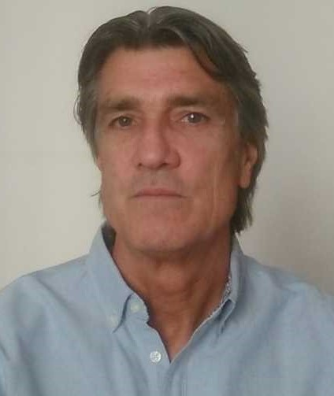

CV Richard Hart

Richard has nearly 40 years of construction industry experience in the fields of civil and structural engineering. His experience covers both building structures and more recently, bridge projects. He has worked in Australia, England and Spain where he now resides.
Broad range of experience in design, site supervision, independent checking and project management.
Structural design of building projects in reinforced concrete, structural steelwork, timber, and masonry.
Civil Engineering design of paved areas and drainage in housing developments.
Quantities estimating, structural surveys and appraisals of existing buildings, reports, method statements, specifications etc.
Technical evaluation of civil engineering claims.
Experience with Australian, British, Spanish, and American Standards and Codes of Practice as well as Eurocodes.
Structural/Civil Engineer
Nationality/Languages
Australian
Spanish - Fluent
BE (Civil) University of Melbourne. 1982
Introduction to Computer Science;
Introduction to Artificial Intelligence with Python;
Web Programming with Python and JavaScript.
Corporate Member Institution of Structural Engineers (MIStructE)
Graduate Member Institution of Civil Engineers (GMICE)
Mersey Gateway Project
Deputy Project Manager Landside Structures. Project manager for Eptisa whose design responsibilities covered all retaining walls, drainage for the entire project including the Main Bridge, geotechnical design and sub-structure design Astmoor & Bridgewater Viaduct. Richard was responsible for the supervision of production and submission of drawings and reports, including quality control. He attended weekly design coordination meetings as well as monthly DJV Board meetings.
N25 New Ross Bypass
Project Manager CAT III check including Barrow Crossing. Richard was responsible for overseeing the independent checking (category 3) and acceptance of structural drawings and geotechnical reports as well as attending client coordination meetings.
Danube Bridge 2
Management of production of Working Drawings and also Design Site Representative for the New Europe Bridge, formerly known as Danube Bridge 2 and the Vidin–Calafat Bridge (Bulgaria). Richard was responsible for developing the design general arrangement drawings for the entire project into working drawings. These included the river crossing and approach as well as the railway bridge and the drainage design for both structures. He was also the Design Site Representative and attended monthly site design coordination meetings between designers, client and checking engineers.